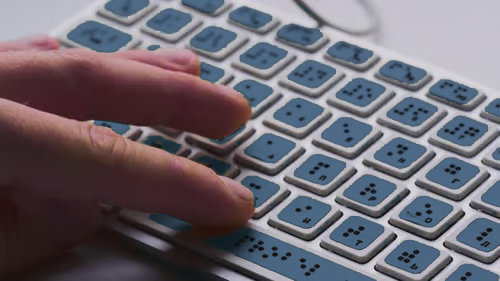

Proyecto Braille
Nuestro proyecto busca acercar la tecnología a las personas con discapacidad visual mediante un teclado físico basado en el sistema Braille. Con esta propuesta pretendemos fomentar la inclusión, facilitar la comunicación y promover la igualdad de oportunidades en el ámbito educativo y tecnológico.

¿En qué consiste nuestro proyecto?
El proyecto consiste en el desarrollo de un teclado físico inspirado en el sistema Braille. Su propósito es permitir que las personas con discapacidad visual puedan escribir y utilizar dispositivos tecnológicos de una forma más sencilla, intuitiva e independiente.

Lo que sostiene el proyecto
- Objetivo
- Desarrollar una herramienta accesible que permita a las personas con discapacidad visual interactuar con computadoras y otros dispositivos de una forma más cómoda e independiente.
- Teclado Braille
- El teclado utiliza seis botones que representan los seis puntos de la celda Braille. Cada combinación permite escribir letras, números y símbolos de forma sencilla.
- Inclusión
- Nuestro proyecto busca eliminar barreras tecnológicas y promover la igualdad de oportunidades mediante soluciones accesibles para todos.
¿Cómo funciona?
Presiona
El usuario presiona una tecla del teclado, la cual tiene relieve Braille.
Envía
La información es enviada automáticamente a la computadora o dispositivo conectado.
Escribe
El carácter aparece en pantalla, permitiendo una escritura rápida y accesible.
Beneficios del proyecto
Mayor accesibilidad
Facilita el acceso a la tecnología para personas con discapacidad visual mediante herramientas adaptadas.
Aprendizaje interactivo
Permite aprender Braille de una manera práctica, sencilla y dinámica.
Integración tecnológica
Conecta sistemas digitales con métodos de comunicación inclusivos.
Impacto social
Promueve una sociedad donde todas las personas puedan participar sin limitaciones.
Antes de que preguntes
No es obligatorio. El teclado y las guías del sitio están pensados para que cualquier persona aprenda la correspondencia entre combinaciones y letras mientras lo usa.
Se conecta como un teclado estándar, por lo que funciona con cualquier computadora o dispositivo que reconozca entrada por teclado.
Es un proyecto en desarrollo, nacido en un contexto educativo, enfocado en demostrar que la accesibilidad puede construirse con herramientas sencillas y de bajo costo.
Puedes escribirnos desde la sección de Contacto; nos interesa conocer instituciones, docentes o personas dispuestas a probar el proyecto.